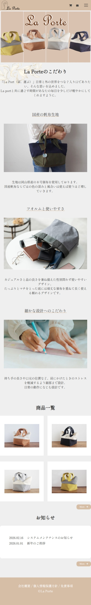
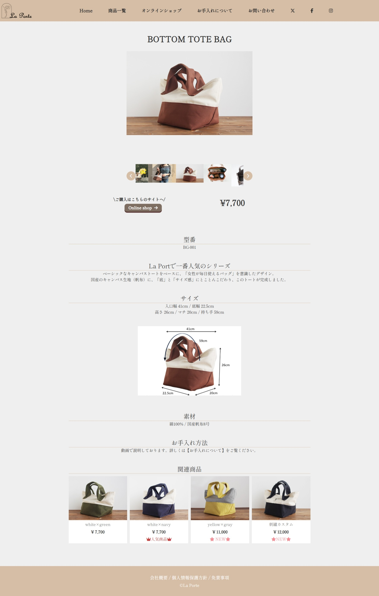
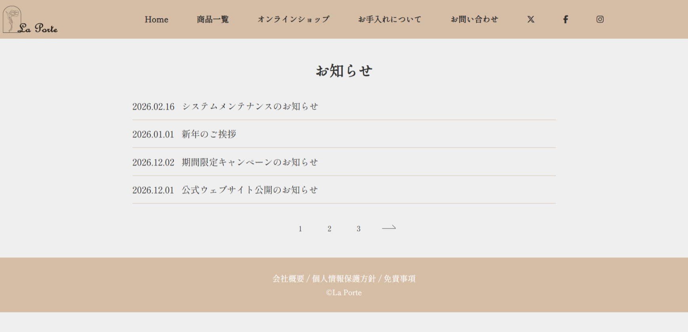

← 制作物一覧へ戻る

← 制作物一覧へ戻る
グループ制作 国産カバン専門店 ECサイト（架空）- La porte -
| 使用技術 | HTML / CSS / JavaScript / Figma |
|---|---|
| 作業箇所 | indexコーディング / news-topコーディング |
| 制作期間 | 2週間（2026年2月） |
制作の概要・目的
職業訓練のグループ制作課題として、国産生地にこだわった少し高価格帯のカバンを販売するECサイトを制作しました。安さではなく「品質の良さ」と「職人のこだわり」をユーザーに届け、ブランドのファンになってもらうことを目的としています。
デザインのこだわり
商品の高級感と上質さを伝えるため、全体を白ベースのシンプルで洗練されたレイアウトにしました。ヘッダーとフッターには温かみのあるライトブラウンを採用し、国産生地の持つナチュラルな上質さと、カバン屋としての信頼感を表現しています。
成果と学び
初めてゼロからコードを書き起こすグループ制作を経験しました。これまでのように見よう見まねではなく、自分たちの手で1から構築する難しさを痛感した一方で、ページが形になっていく過程に大きなやりがいを感じました。「実装したいデザインに対して、どのようなコードを書けばいいか分からない」という知識不足の歯がゆさも経験しましたが、この課題をきっかけに「実務で通用するコーディングスキルを身につけたい」という学習へのモチベーションがさらに高まりました。
TOP (PC)
SP

DETAIL

MY WORK
